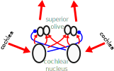

Hearing Speech
Human Speech
Psychology, PPLS
University of Edinburgh
2025-01-21
The Ear

- pinna
- concha
- tympanic membrane
- ear canal
- ossicles
- cochlea
Basilar Membrane
- vibrates in response to different frequencies
Sound to Electricity in the Organ of Corti
basilar membrane moves tectorial membrane and hair cells
stereocilia cause inner hair cells to produce electricity
- this is a simplification
Auditory Pathway (1)
3,500 inner hair cells, 11,000 outer
30,000 nerve fibres, tonotopically arranged by frequency
Auditory Pathway (2)
neurons respond to
onsets
offsets
duration
frequency (narrow)
frequency (broad)
Stereo
Auditory Cortex

- 440–460 Hz
- 2440–2460 Hz
Recognising Speech
we are uniquely well adapted to recognise speech
- tones
- speech
Tones (0.6s)
Liberman et al. (1967)
Speech (0.6s)
speech rates are typically 20 phonemes/sec or more
takes about 200ms to recognise a word in context
Rapid Speech
supposedly fast Chinese speaker here (h/t Carola Liu)
Guinness World Records youtu.be/FZ0PDJbRU5I
I Scream for Ice Cream
no clear signal for phoneme or word boundaries
how do we segment speech?
Segmenting Speech
issues
- phonemes vary
ball, bill, able, rob
- speed changes phonemes
- coarticulation
pip, sin
cues
- longer onset syllables
- longer final syllables
- aspiration
More Cues
Norris et al. (1997)
- easier to segment streams into (possible) words
impossible
possible
fapple
vuffapple
powderm
powdermot
More Cues
- (in English) strong syllables start words
be alert! Your country needs lerts!
be a pal! Your country needs apals!
- (low audibility) phrases like conduct ascents uphill
“the doctor sends the bill”
“a duck descends some pill”
Segmentation is Monolingual
Cutler et al. (1992)
üá´üá∑ clear syllables
ba-lance
bal-con
üá¨üáß weaker syllables
balance
balcony
Task: Detect ba or bal
Cutler et al. (1992)
Neuroscience of Segmentation
progress only just being made
shows hierarchical processing from sounds to phonemes to words
constrained by expectations
phoneme surprisal
cohort entropy
Brodbeck et al. (2018)